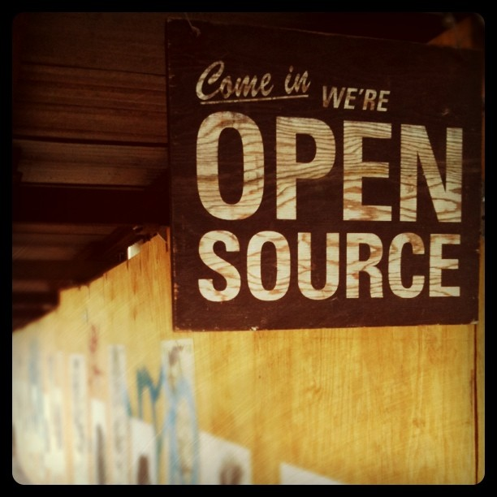

Development Methodology
Lightning Talk Lunch
Dec. 2014
Mark Lavin
What do I mean by "Development Methodology"?
I mean the process by which we create applications.
Not specifically about the tools. The tools are meant to empower the
process not dictate the process.
Why give this talk? We do this everyday. Don't we already know this?
New staff/contractors. No formal training on this. It's been
folklore. Whispers passed on from Tobias, Colin, Mark, and Karen.
This is also for the non-technical staff to understand our
workflow and how our thought process is motivated when discussing
projects and timelines. At times we talk about it like everyone
already knows it but
Agile Inspired
We/I frequently talk about our process as agile inspired or practical agile.
To me this means incorporating the agile manifesto in a way that
fits the task at hand depending on team size/experience, project
stability and project timeline. It's not Scrum or Kanban or
Extreme Programming. It's whatever works for the client and the
team that has to deliver the project.
But what is "Agile"? It seems like an abstract buzzword like webscale.
Agile Manifesto
It's short and to the point.
Individuals and interactions over processes and tools
Working software over comprehensive documentation
Customer collaboration over contract negotiation
Responding to change over following a plan
There is also a 12 principles which spell this out even more.
If you've never read it you should.
People > Processes
- Individuals and interactions over processes and tools
The process adapts to the team and client we have. Things that work
well for large long term projects like Libya might not work
for projects we turn around in 3 weeks like Mobile Partners.
Project leads and project managers shape how they want the project to run.
Software > Documentation
- Working software over comprehensive documentation
Unit tests document how the code works. Not how it should work
or might work. How it actually works at any point in time.
There will always be questions about how it should work. There
should never be questions about how it does.
Collaboration > Contracts
- Customer collaboration over contract negotiation
This is hard for us to achieve completely because you really
need trust and buy-in from both sides. We talked more about
this during the estimation task force meetings, selling a more
agile process. Sadly it's not an easy sell to say "we don't know
exactly what will be made but we will always agree that it is
what was wanted."
Feedback > Plans
- Responding to change over following a plan
It's more important to get the customer what they want/need
than to give them what was agreed to at times. Everything must
be flexible. Achieving this is difficult and there are trade offs.
We'll explore that next.
We have a few copies of this book around (small pocket version). Again
this isn't something we are strict about but there are some ideas which
drive out development process.
In particular the ideas of code review, rigorous unittesting, and simple/clean code
(i.e. waiting on features until they are needed, no early optimizations).
In the book there is a great description of timeboxing as of tuning a development
project with a set of knobs: Resources/Cost, Time/Schedule, Scope, and Quality
We don't like to cut quality (and it can only be cut so much before it stops working).
So if you want to add scope you have to either add time or resources. Adding
resources has a diminishing return. The classic example being that 9 women
can't make a baby in 1 month.

Tobias talked about using Open Source methodologies though it's vague what
exactly that means. So I thought about open source projects and philosophies
that shape how we think about development. I came up with three that
I think fit the best and again share a lot in common with the agile
manifesto.
Zen of Python
>>> import this
The Zen of Python, by Tim Peters
Beautiful is better than ugly.
Explicit is better than implicit.
Simple is better than complex.
Complex is better than complicated.
...
This drives not only how we write Python but it inspires Django's philosophy
as well as drives us towards/away from other tools.
Unix Philosophy
ps auxww | grep celery | grep -v grep | awk '{print $2}' | xargs sudo kill -TERM
The Unix philosophy emphasizes building short, simple, clear, modular,
and extensible code that can be easily maintained and repurposed by
developers other than its creators. The Unix philosophy favors
composability as opposed to monolithic design.
Write programs that do one thing and do it well.
Write programs to work together.
Eric Raymond's 17 Unix Rules
Conclusion
That's a brief rundown the philosophies which drive development at
Caktus. I hope you all see those values reflected in the work we
do and use those to drive your future work.
References
http://agilemanifesto.org/
https://www.python.org/dev/peps/pep-0020/
http://en.wikipedia.org/wiki/Unix_philosophy
Photo Credits
https://www.flickr.com/photos/ideonexus/3321308066/
https://www.flickr.com/photos/archer10/14997838535/
https://www.flickr.com/photos/jaysonlorenzen/6007112319/
https://www.flickr.com/photos/tappnel/5798812875/